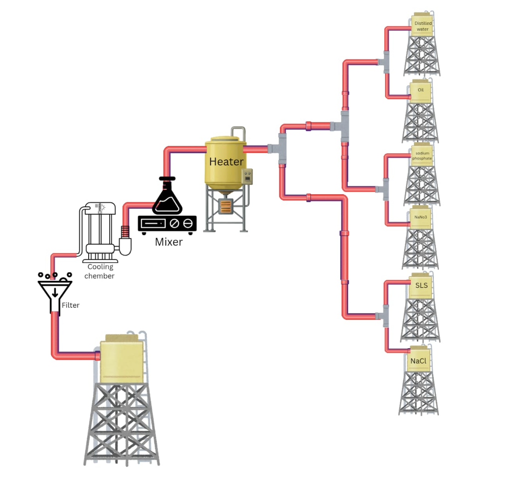
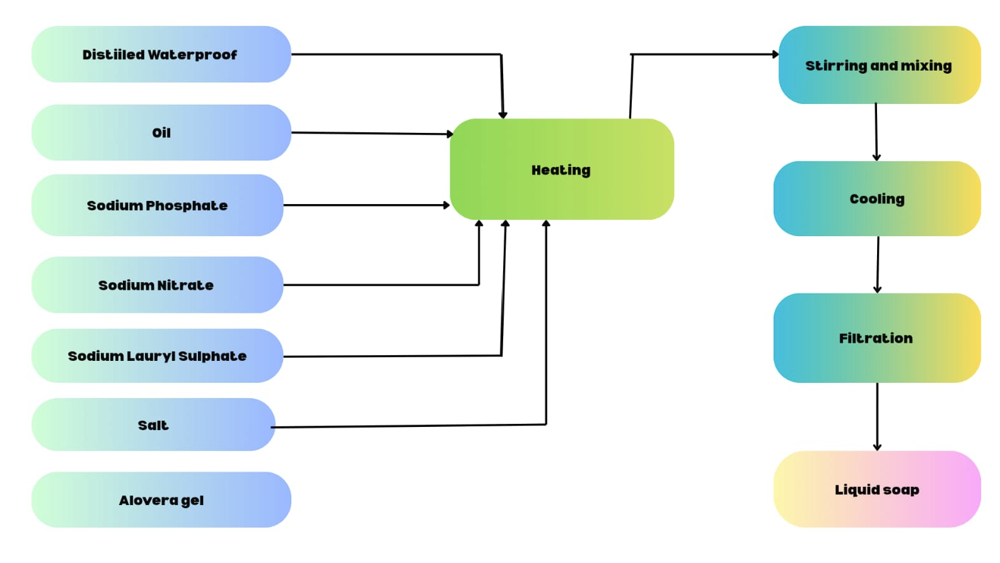
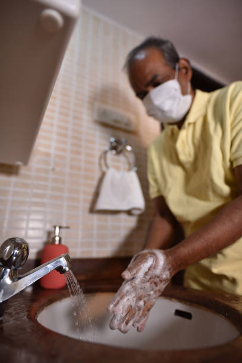
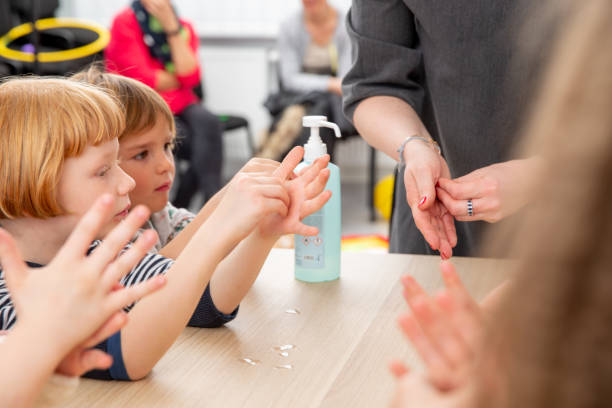
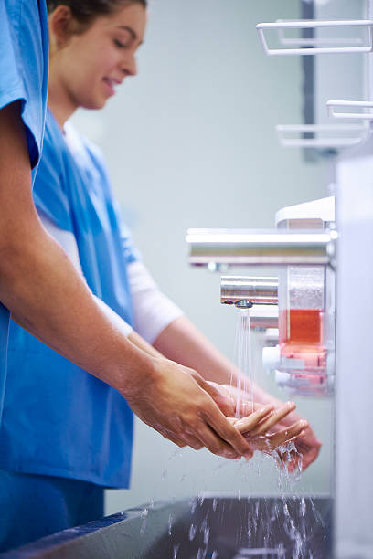

COLLEGE PROJECT
Liquid Soap Preparation
A systematic study and demonstration of the preparation of liquid soap using suitable ingredients, proper mixing techniques and controlled processing conditions.

Our Team
Teamwork, experimentation and innovation.
ABOUT THE PROJECT
From ingredients to final product.
This project focuses on understanding the preparation of liquid soap and the sequence of operations involved in obtaining the final product.
The project demonstrates the importance of correct ingredient selection, proper mixing, controlled processing and systematic preparation.
SYSTEM OVERVIEW
Engineering & System Design
Explore the complete engineering blueprints for the liquid soap preparation system in their dedicated sections.
Process Sequence Diagram
Detailed chemical piping and equipment schematic tracing the stages from reagent towers to the finished liquid soap tank.
View Sequence DiagramSystem Block Diagram
Functional block diagram illustrating the stoichiometric inputs, thermal reaction unit, and purification flow.
View Block DiagramINGREDIENTS
What goes into the formulation?
The major materials involved in the liquid soap preparation process.
Distilled Water
Used as the primary medium for preparing the liquid soap formulation.
Oil
Used as one of the important components in the formulation.
Sodium Phosphate
Added as part of the specified formulation shown in the project process.
Sodium Nitrate
Included as one of the materials used during preparation.
Sodium Lauryl Sulphate
Used as part of the formulation and contributes to cleaning action.
Salt
Included in the formulation according to the project process.
Aloe Vera Gel
Included as an additional component of the liquid soap formulation.
PROCESS
Preparation Sequence
Visual representation of the liquid soap preparation sequence.

The sequence diagram shows the movement from the initial ingredients through heating, stirring and mixing, cooling, filtration and finally the liquid soap.
Ingredient Preparation
Distilled water, oil, sodium phosphate, sodium nitrate, sodium lauryl sulphate, salt and aloe vera gel are prepared.
Heating
The required materials are directed towards the heating stage.
Stirring and Mixing
The heated mixture is stirred and mixed properly.
Cooling
The mixture passes through the cooling stage.
Filtration
The prepared mixture is filtered before obtaining the final product.
Liquid Soap
The final filtered product is obtained as liquid soap.
BLOCK DIAGRAM
System Architecture
Detailed block representation of the liquid soap preparation system.

PROJECT VIDEO
Watch the process.
Demonstration of the liquid soap preparation process.
Preparation of Liquid Soap
Watch the demonstration of the major stages involved in preparing the liquid soap formulation.
APPLICATIONS
Where liquid soap can be used.
Common applications of liquid soap products.

Household
Used for routine daily cleaning, handwashing, and personal hygiene in domestic environments.

Institutions
Suitable for schools, colleges, offices, educational laboratories, and institutional public facilities.

Healthcare
Essential for clinical hygiene, hospitals, medical clinics, and sensitive sterilization protocols.

Commercial
Ideal for corporate offices, shopping complexes, restaurants, and high-volume commercial washrooms.
OUR TEAM
Meet the team.
The members who worked together on this project.
Liquid Soap Research & Development Team
Our college project team in the chemical laboratory conducting trials, ingredient measurement, heating, and quality testing.
Samiksha Surtne
Project Team Member
Rushikesh Aboti
Project Team Member
Shweta Makare
Project Team Member
Sejal Dalimbkar
Project Team Member
INTERACTIVE
Test your knowledge.
Try this quick quiz about the project.